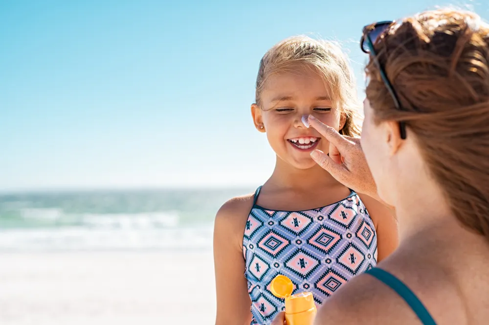

Summer Safety Tips for Kids Playing Outdoors

While there are many temptations to keep kids inside including video games and television, with the warmer weather the motivation to get your children outdoors for some exercise and fun is sure to increase. However, there are also precautions that should be taken to make sure playing outside is an enjoyable and safe experience for your little ones.
Wear a Helmet
Jumping on the bicycle after dusting it off from the storage shed is something your child is probably looking forward to. Bike riding is a great way to practice balance while also getting some low-impact exercise and exploring the neighborhood.
While there’s no sweeping federal law requiring kids to wear helmets, there are state or local laws that dictate these rules. Mandated or not, you should be properly fitting your child with a helmet – it could save their life, or prevent a life-altering brain injury from a fall or crash. Helmets apply to sports as well – make sure they’re wearing the right helmet for the right sport, as it’s not a case of one helmet fits-all.
Learn their Surroundings
Healthline.com notes that kids may be eager to camp or hit the trails, and that’s all fine and dandy, as long as everything goes smoothly. However, “you never know when the weather may shift, the trail may peter out, or your kid may take a tumble in the woods,” notes the source.
Even if they’re hiking with family, kids can get over excited and rush ahead without paying attention and get lost, adds the site. It’s important to teach kids how to navigate by using landmarks, or how to stay calm and signal for help if they’ve been separated from a group. You could even give them a whistle or flashlight just in case, it adds.
Be Water Wise
You should always supervise kids when they’re having fun in a body of water, as drownings are the leading cause of injury death for children aged 1 to 4, according to the Centers for Disease Control and Prevention (CDC). This applies to backyard pools, as well as a picturesque lake you come across on a family outing.
Putting your child in a formal swimming program is an important step to help them survive if they fall into the water or swim too far off shore. If you’re out on a boat, make sure your kids are wearing a proper life jacket in case they go overboard. Also inform your kids to stay away from rushing rivers and streams, as they can get swept away by strong currents.
Keep Them Hydrated
Parents.com notes, “Children are much more prone to dehydration than adults because their bodies don’t cool down as efficiently”. This is of course an especially high risk when the thermometer climbs in the summer. Also, children’s kidneys do not conserve water like an adult, making their risk even higher.
Kids often don’t remember to drink fluids or report symptoms of dehydration as readily as an adult, so you have to ensure they are getting plenty of water – taking “beverage breaks” every 20-minutes when they’re out playing is a good guideline, according to the source. Get them used to drinking healthy beverages at every meal to get them into the routine, it adds.
Teach Them to Bug Off
Well, not literally – but you can teach your kids how to reduce the chance of being bitten or stung by an angry insect. KidsHealth.org says a few tips to prevent bites include avoiding running barefoot on grass, and even avoiding drinking from soda cans outside, as bugs love to congregate around sweet liquids.
Meanwhile, Lyme Disease from tick bites seems to be making more headlines every year, so make sure your child is wearing tick-repellent clothing (yes, this clothing exists) or you’ve applied a tick-repellant spray. You may also want to consider long pants for your child if they’re playing in wooded or grassy areas, even if it’s hot outside (it’s better than the alternative).
Don’t Get Burned
Of course, one of the first things you should do before letting your kids play outside on a warm summer day is to apply some sunscreen. Getting a sunburn is no fun for a kid at all, and it can double a child’s risk of developing skin cancer later in life, according to Parents.com.
The source notes you should be using sunscreen with a sun protection factor (SPF) of 15-or higher, which also blocks 93-percent of UVB rays that are directly responsible for burning skin. Follow all the directions on the bottle to know when to re-apply the lotion, for example after swimming and toweling dry.
Avoid Poisonous Plants
It’s not just the bugs that kids need to be wary about – even plants can bring an otherwise fun outing to an end. AboutKidsHealth.ca notes that education can go a long way to avoid touching toxic plants, and to “not assume that a plant is safe for people just because birds or wildlife eat it”.
The source speaks about keeping kids safe from certain plants in the home (tagging plants with their name can be helpful, or avoiding planting any that may be harmful to children), but this can also apply to your backyard or the wilderness. It notes if your child gets a skin reaction to a plant or eats one you suspect is poisonous, you may even want to take a photo of it to show an expert after you’ve called a poison center (or for emergency medical help if needed).
Source: https://activebeat.com/your-health/children/7-summer-safety-tips-for-kids-playing-outdoors/